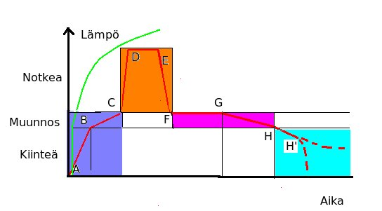

 Alkulämmityksessä pisteeseen B saakka lasin osalta huolehditaan vain lämpöshokin vaarasta. Siitä että lasi ei halkea.
Lämpöshokin yläraja - pisteen B korkeus - on muunnosalueen reuna. Sulatuslaseilla 475 C. Sivusuunnassa pisteeseen B tarvittava aika vaihtelee työn mukaan. Tumma lasi imee nopeammin lämpöä. Laakeat paksut lasit kestävät vähemmän, ja aikaa on pidennettävä.
Muotilla voi olla myös oma osuutensa. Kipsiseosmuotti sisältää aina kosteutta. Niin kauan kun siinä on vapaata vettä muotti ei lämpene yli100 C. Sen jälkeen kipsistä vapautuu vielä kidevesi n. 270 C asti. Muotin lämmitys on tehtävä niin hitaasti ettei suurta lämpöeroa synny kostean sisuksen ja kuivuneen pinnan välille.
Välillä B-C tapahtuu lasin pehmiäminen. Lasimateriaalin puolesta sen voisi kuumentaa nopeastikin. Keraamiset muotit rajoittavat lämmön nostoa. Keramiikassa tapahtuu kvartsin inversio, johon liittyy voimakas laajeneminen. Tämä voi rikkoa muotin.
Toinen syy hitaampaan lämmitykseen on lasin väliin jäävä ilma ja liimasta syntyvät palokaasut. Näille pitää antaa aikaa poistua ennekuin lasien reunat tiivistyvät. Aikaa tarvitaan 60-90 min. kuplaneston takia pisteen C lämpötila on usein yli muunnosalueen (500 C), jopa 600 C.
Jos fuusauspoltossa yhdistetään pieniä laseja, kuten esim. liuskatekniikassa, Voi alkulämmitys olla nopeakin. Jos iso aluslasi peitetään erivärisillä paloilla, se on osin varjossa ja vaatii pidemmän esilämmityksen. varsinkin päälleslumppauksessa muotti usein muodostaa 'kylmävarauksen' lasin alle. Tämä vaatii erittäin pitkän alkulämmityksen.
Normaalisti käytän alkulämmitykseen 2 tuntia, mutta joskus olen tarvinnut viisikin tuntia.
Kuplanpoistovaiheena olen pitänyt 30-60 min.
Nyrkkisääntö on että uudelleen kuumennuksessa pidennetään alkulämmityksen aika kaksinkertaiseksi-